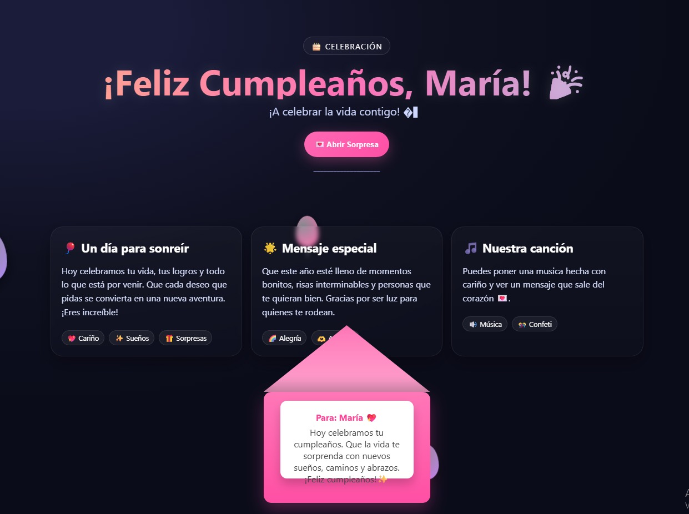
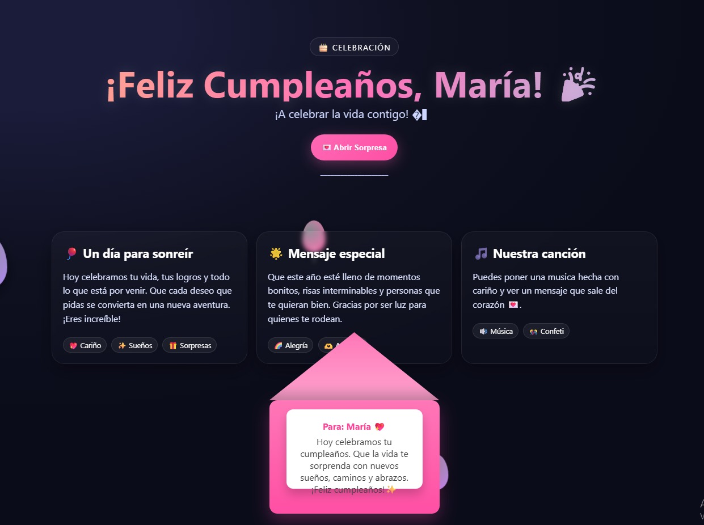

Es un regalo digital que la persona podrá abrir desde cualquier parte del mundo, en su celular o computadora, y que quedará como un recuerdo para siempre.
Contactame👉 Ejemplo de este tipo de página:
Página romántica con fotos, mensajes y música de fondo 🎶
Una página romántica pensada para sorprender a alguien especial ❤️. Incluye fotos llenas de recuerdos, mensajes personalizados que transmiten tus sentimientos y música de fondo 🎶 que acompaña cada momento. Un detalle único y creativo para expresar lo que sientes de una manera inolvidable.
Pagina romántica


Página sorpresa para un cumpleaño con mensajes interactivos 💖
Una página sorpresa de cumpleaños llena de detalles especiales 💖. Con mensajes interactivos, animaciones divertidas y un diseño pensado para emocionar, es la forma perfecta de dar un regalo digital único e inolvidable
pagina de cumpleaños 
